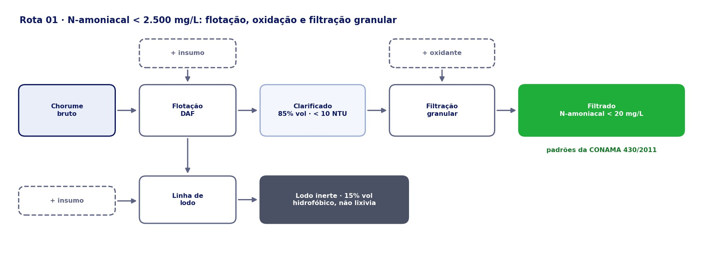
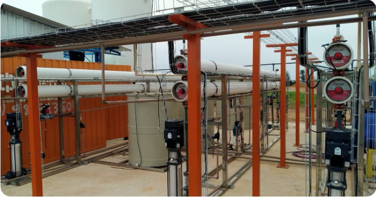

O problema que resolve
O chorume é um dos efluentes mais difíceis de tratar: carga orgânica recalcitrante, nitrogênio amoniacal elevado, sólidos, sulfatos e metais, com composição que muda de aterro para aterro e ao longo da vida de cada aterro.
Soluções únicas costumam falhar, e as plantas com osmose reversa ainda geram concentrados sem destino adequado.
Como escolhemos a rota
O nitrogênio amoniacal é o parâmetro que mais define a rota: abaixo de cerca de 2.500 mg/L ele pode ser removido no próprio tratamento; acima disso, vale mais recuperá-lo como produto.

Como funciona: as três rotas
N-amoniacal abaixo de 2.500 mg/L
Flotação por ar dissolvido (DAF), oxidação e filtração granular. O clarificado (85% do volume, turbidez < 10 NTU) é filtrado até N-amoniacal < 20 mg/L, atendendo à CONAMA 430/2011.

N-amoniacal acima de 2.500 mg/L
DAF, acidificação e osmose. O permeado (85% do volume) segue para descarte ou reúso, e o concentrado vira fosfato/sulfato de amônio, um insumo agrícola com cerca de 1% de N-P-S.

Concentrados de osmose reversa
O concentrado passa por DAF e linha de lodo com polímero, gerando 60% de clarificado e 40% de lodo inerte que retém sólidos, matéria orgânica, sulfatos e metais.

Onde se aplica
- Chorume de aterros sanitários, com perfis diferentes de nitrogênio amoniacal.
- Concentrados de osmose reversa que hoje não têm destino adequado.
- Estações que precisam gerar água para descarte ou reúso e um lodo seguro para disposição.
Diferenciais
- Rota sob medida, definida pelo perfil do chorume e por ensaio de tratabilidade.
- Processos físico-químicos: sem depender de sistemas biológicos.
- Nitrogênio valorizado como insumo agrícola, e não só removido.
- Lodo inerte e hidrofóbico, que não lixivia.
- Escala industrial comprovada.
Resultados comprovados
- Filtrado com N-amoniacal < 20 mg/L (Rota 01) ou permeado de osmose (Rota 02).
- Nitrogênio recuperado como insumo agrícola, validado com a UFRRJ.
- Redução de volume dos concentrados de osmose e imobilização dos poluentes em lodo inerte.
- Planta de 1.000 m³/dia em operação na Região Metropolitana de Curitiba (PR).

Propriedade intelectual
Tecnologia protegida pelo pedido de patente de invenção BR 10 2026 020875 2, depositado no INPI.
Data de depósito, título da patente, principais reivindicações e situação do pedido.
Como implantamos
Caracterização e ensaio
N-amoniacal, sólidos, matéria orgânica, sulfatos e metais, e ensaio de tratabilidade com o chorume do cliente.
Rota e projeto
Definição da rota, dimensionamento, balanço de massa e destino de cada saída.
Implantação e operação
Cronograma de implantação, acompanhamento da partida e supervisão técnica da operação.
Indicadores econômicos
Custo por m³ tratado, comparação com a destinação externa ou outras tecnologias, receita com o insumo agrícola, CAPEX e prazo de retorno.
Imagens



Cases relacionados
Outras tecnologias GETA
Desaguamento e Inertização de Lodos
Rota tecnológica baseada em reações de encapsulamento químico de metais.
CDR de Alta Performance
Elevado poder calorífico e baixa umidade em combustível derivado de resíduos.
Processo de Oxidação Seletiva (POS)
Radicais carbonato gerados a partir de CO₂ atacam só os compostos inibidores, para gerar mais biometano.
Quer aplicar uma dessas tecnologias?
Avaliamos o seu efluente ou resíduo e indicamos a rota mais adequada, com ensaio de tratabilidade.